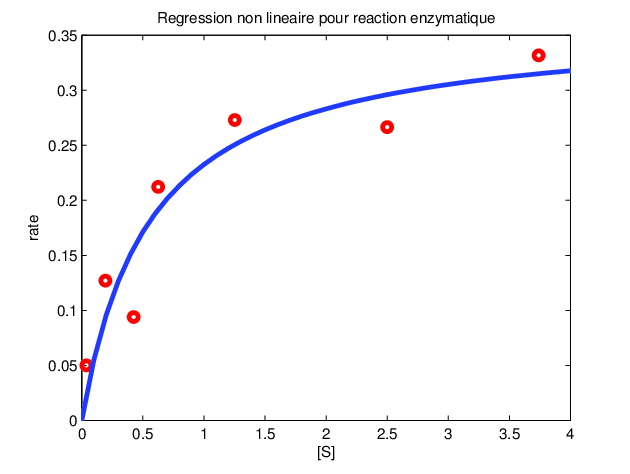

Analyse
Exemple de régression non-linéaire à partir de points

Soit :
- `X` une matrice de `m xx n` caractéristiques (features)
- `y` un vecteur de données résultantes connues
Ce type de régression consiste à déterminer la
fonction hypothèse `h_Θ(x) = Θ_0 + xΘ_1` dont les points sont les moins éloignés des valeurs
réelles. Autrement dit déterminer les paramètres `Θ_0` et `Θ_1` qui permettent à la fonction
linéaire h d'avoir des points ayant une distance/différence minimale avec les points "réels" (connus).